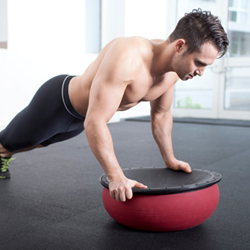
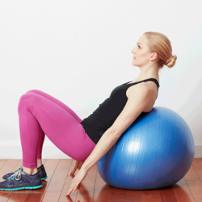

Crossfit Training Equipments :

Crossfit is that branch of exercise which concentrates on overall fitness level, that includes weight training + cardiovascular training at the same time. Hence improving strength, stamina and endurance all at once. It is very effective in losing weight fast.
KettleBells
Kettlebells are weights with handles which make its point of gravity off-centered. Kettlebells recently became more popular as it is being used in a range of crossfit and functional exercise like deadlift swings. They come in different weights.

Punching Bags
Punching bags, also known as heavy bags are often used for boxing training, and is widely used as a part of crossfit training for increased stamina and strength. These bags are filled with sand so that the user don’t end up hurting the hands.
Battle Ropes
Battle ropes are very popularly used for crossfit training. They are great for improving strength, stamina and flexibility. Two heavy ropes are tied to a firm support, and the other ends are open. The user have to hold the open ends and move the rop in various motions.

Plyometric Box
Plyo boxes are heavy duty wooden boxes used for plyometric exercise under crossfit training. They come in a variety of heights. There are also some adjustable plyo boxes available.

Grip Strengtheners
These are simple clips to grip and press. It helps improving the hand grip, and other associated muscles.

Weight Training Equipments :

Weightlifting equipment are referred to tools which are used during exercises that include include lifting weights to pump up muscles, some of the examples are barbells, weight bench, dumbells, etc.
Power Rack or Squat Stand
A squat stand which is also more popularly known as power rack is a large steel frame that has holders at different heights to hold barbells with weight plates. It enables free movement of user while doing squats. Sometimes it comes with extra options like a pullup bar, dip bar, and weight plate holders.

Smith Machine
The Smith machine is very similar in structure to a power rack, the primary difference is it restricts the motion in the form of the barbell attached to the support rail. This equipment is very popular to perform squats specially for beginners.

Barbells
Barbell is the most used equipment in any gym, specially for weight lifting. It is used to perform squats, bench press, should press, deadlifts biceps curls, etc. It is a long piece of iron bar with space at both the ends to add weight plates. There are various size of barbells for different exercises. Also, they come in different weights too.
Barbell Collar
Barbell collars basically look like clips, and they are used at the ends of a barbell to hold the plates together, so that plates don’t fell down while working out.

Weight/Bumper Plates
Weight plates are circular plates of iron with a whole exactly at the center so that they can inserted over a barbell. These plates comes in various size based on its weight. When these plates are coated with high grade rubber these are called as bumper plates, so that they don’t break the floor when thrown on ground. These plates can also be used without the barbells for exercises like Russian twists, back extensions, front shoulder raises and more.

Weight Bench
This is another versatile and must have equipment for any gym. It is essential for exercises like weight bench and one arm dumbbells for back. Weight bench usually comes in 3 variants, and are also available as 3 in 1. The 3 variants being inclined bench, declined bench and flat bench, and their uses are self explanatory. A weight bench can also be used for many other exercises like Leg Raises (for abs), shoulder press (with dumbbells), biceps exercises and for support in other wide variety of exercises.

Glute Ham Developer
Glute ham developer is a machine dedicated to workout glutes and hams. It has a holder at one end with foot plate to hold the legs together when you lie upside down on it, while on the other end there is a raised platform stuffed with hard foam so that you can rest your pelvic area on it.

Power Tower
Power Tower empowers you to workout without needing any other equipment, only based on your body weight. It is a tower with pull up station and dip bars. One can do a range of exercises on it which includes pull-ups, tricep dips, vertical knee raises and chin-ups.

EZ Curl Bar
An EZ-bar curl is like a barbell but with a strategically done zig zag rod. This is basically used for working out biceps.

Cables and Pulleys
This is another versatile machine that every gym should have. It has cables moving through the pulleys and pulleys can be adjusted to various heights from top to bottom. There are weights attached to one end of the cable, while on the other hand there is often a carabiner to attach the handle of your choice based on the exercise to be done. Some larger version of these machine have two cable systems in one machine, and is also known as cable cross over machine. It is used for a wide variety of exercises, most popularly for biceps, triceps, chests and shoulders.

Dipping Stations
These are standalone equipment built with heavy duty material. These stands have bars on either side on which one can perform tricep dips.

DumbBells
Dumbbell is the most popular piece of gym equipment. It has a small bar with weights attached to either hands. There are some advanced dumbbells available in the market, the weights of those can be adjusted with a small knob.

Pull Up Bar
Often the pull up bars comes attached with a power rack or smith machine or a power tower, but if you want a standalone pull up bar, there are options available to choose from wall mounted pull up bar or a ceiling mounted pull up bar. One of the other options is doorway pull up bar. Doorway pull up bars are either telescopic rods that can be attached to a door, or there are other ones that can be hooked to the door.

Lat Pull Down Machine
A lat pull down machine is a steel frame with a cable attached to weights at one end, and the long handle bar at the other. There is a seating station attached to it where user has to sit on it and pull the bar down.

Leg Extension Machine
This machine has a sitting station and foam covered leg holders. The leg holder is attached at the end of a cable, the other end of which is attached to the weights. User have to sit on the station, and pull the weights up using legs.

Leg Curl Machine
The leg curl machine consists of a bench which is slightly raised from between and a calf support holder to lift the weights. User have to lie down upside down on the bench, while pulling the weights using legs.

Preacher Bench
The preacher bench is designed to workout biceps in isolation, that means no other muscles are used. The user sits on it while placing the arms on the raised and slanted station. An EZ Curl bar can be used to add weights, while some preacher benches comes with a handle bar which is attached to the weights through a cable.

Leg Press machine
This is the first love of every gym lover who loves to workout legs. It has a slight slanted platform to lie down and a foot plate to place the foot firmly on. Rods are attached to the foot holder to add weight plates to it. User have to lie down on the platform, keep the foot on the plates and lift the weights. My gosh. I too just love it.

Hack Squat Machine
Hack squat machines are used for performing squats while in slanted position at an angle of 45 degrees. It has a back support and a shoulder support platform to carry weights and a foot plate to stand on. The whole support bench is attached to a rail to make the squats smoother.

Calf Machine
Standing calf machine is like a tower with a platform to keep toes, and a shoulder support to life weight. User have to place the shoulders under the support, keep the toes on its platform, and raise the calves. This makes up for a very effective calf workout. There are also seating calf machines available in the market.

Leg and hip Adduction/Abduction Machine
This machine is used for working out the inner thighs and glutes.

Pec Fly Machine
Pec fly machine consists of a seat, and two handles at almost shoulder length, so when you sit on it and hold the handles it makes a butterfly posture. The user has to push both the handles in to work out the chests. The handles are attached to the weights through a cable.

Hyper Extension Bench
The hyper extension bench consists of foot board, and a support pad to rest the thighs on in a slightly slanting position (about 45 degrees). It makes for a very efficient workout for back and core.

Crossover Machine
A cable crossover machine is like a cable pulley machine, but with sets (2 cables, 2 handles, 2 set of weights).

Cardio Equipments :
Cardio equipment refers to machines that are used for cardiovascular exercise like running, stair climbing, boat rowing, etc. Cardio Vascular exercises increases heart rate and thus burns fat fast. They are great tools to loose weight.
Treadmills
A treadmill is like a convener belt to run/walk on. In some of the manual treadmills there are steel rollers instead of belt. In automatic treadmills the convener belt runs on electricity and have options to set the speed and inclination. These treadmills comes with a nice console that shows various metrices like current speed, current inclination, calories burnt, and also have buttons to set preset programs.
Spin Bikes/Indoor Cycles
A spin bike is a stationary bicycle to be used indoors. These bikes have knobs to set the difficulty level. These bikes can be adjusted on different seat heights and handle heights. Spinning exercise are very popular in gyms.
Air Bikes
Air bike are also like stationary bicycles, but with a fan connected to the pedals which provides natural resistance to the user. The faster as user runs it the more air resistance the fan provides. These are great for High Intensity Interval Trainings.

Rowing Machines
A rowing machine is a very effective cardio workout equipment that unlike other cardio equipment works out on full body. It imitates the action of a rower boat. The user sits on it like in a boat, with knees on foot board and hold the handles and pull the cables.
Elliptical Trainers
Also known as cross trainer, this imitates action of stair climbing without putting stress on knees. It has two handles and two pedals. User have to stand on the pedals and push them using body weight. It often have a display and control console where resistance can be set and workout can be tracked (speed, distance and calories). Some cross trainers even have the sensors to monitor the heart rate

Agility Ladders
It is a popular workout amongst footballers to increase foot speed and body balance. It is a ladder laid out straight on the ground.

Stair Climbers
Stair climbers are actual stairs on a belt. These are often 4 to 6 stairs which rolls infinitely like an elevator.

Vertical Climbers
Vertical climbers imitates the action of mountain climbing. It is a vertical pole with a pedal. User will have to climb on the pedals and start the action.

Abs Workout Equipments :
There is an increasing craze for flat and toned abs with 6,8 or 10 packs. An impressive pack of abs can only be built with special gym equipment like ab bench, ab rollers, ab gliders, ab belts and other equipment that work directly on the abs muscles.
Abdominal Bench
Abdominal benches are an essential piece of equipment in any gym. These are with adjustable height at one end to change the angle of inclinations. At one end there are pedals to hold foot together.

Ab Rollers
It is a small wheel with handles attached to it. User have to hold the handles using both hands, while keeping the knees firmly on ground and roll the wheel on the floor stretching the body. This makes up for a very effective abs exercise.

Ab Belts
Ab belts are devices to wrap around the stomach. The pads in ab belts are electrically charged to produce vibrations that helps abs to contracts naturally.
Yoga Equipment and Accessories :
Yoga Mat
There is an increasing craze for flat and toned abs with 6,8 or 10 packs. An impressive pack of abs can only be built with special gym equipment like ab bench, ab rollers, ab gliders, ab belts and other equipment that work directly on the abs muscles.

Yoga Strap
Yoga straps are a popular and useful tool that can offer help to yogis of all levels. One of the most common uses for a yoga strap is to help get into and maintain challenging poses that might otherwise be out of reach.
Support and Protection Accessories :
Your body experience wear and tear especially in joints. To help you keep going and lifting weights there are support and protection accessories available in the market. You might or might not need these now, but you never know when you will need one, hence it is better to know them in advance. So that you keep going with your workout.
Weightlifting Belts
A weightlifting belt can be a reminder to keep your spine in the correct position and can help maintain abdominal pressure to stabilize the spine during heavy lifting
Knee Support, Wraps and Sleeves
Commonly worn by competitive powerlifters and bodybuilders, knee wraps are made of the same elastic material that is typically found in wrist wraps. They are designed to be wrapped around the knee in a spiral or diagonal method for use in squats.

Wrist Wraps
Wrist strap is a set of two strips of cloth, each a little over a foot long, with a sturdy, stitched-in loop at one end. The opposite end goes through the loop, and the resulting circle then slides neatly around your wrist

Kinesiology Tape
The Kinesio Taping® Method is a definitive rehabilitative taping technique that is designed to facilitate the body’s natural healing process while providing support and stability to muscles and joints without restricting the body’s range of motion as well as providing extended soft tissue manipulation to prolong the.

Tennis Elbow Braces
Braces for Tennis Elbow. Tennis Elbow also known as Lateral Epicondylitis is caused by overuse. Pain can be felt on the outside of the elbow and occasionally in the forearm or wrist.

Calf Compression Sleeves
Compression socks and sleeves give the muscles a slow build up of compression, meaning the compression is greater at the foot and ankle and less as it comes up the calf and lower leg.
Compression Clothes
Compression garments are pieces of clothing that fit tightly around the skin. In medical contexts, compression garments provide support for people who have to stand for long periods or have poor circulation.

Ankle Braces
An ankle brace is a garment that is worn around the ankle to protect it or for immobilization while allowing it to heal from sprains and other minor injuries. Ankle braces are used to immobilize the joint while providing heat and compression to the bones.

Massage and Recovery :
Foam Roller
These are hard rollers with foam over them for self-massage. They are good for back massage as well as thighs massage. For back massage user have to lie on it with roller under the back and move to and forth. Foam massage rollers help in speeding up of muscle recovery and relieve muscle soreness.
Massage Mat
Massage mats are often made of memory foams. They are equipped with small vibrating massagers at specific strategic points. Some massager mats also come with heat pads.
Massage Stick
Massage sticks are S shaped stick for shoulder, back and neck massage.
Cooling Towel
A cooling towel is a piece of cloth made of special evaporative material which once soaked in water stays cool for 3 to 4 hours and very relaxing, and restores the energy by keeping the body temperatures low during intense workouts, specially in hot weather.
Cooling Vest
A cooling vest is jacket made of special material and often uses ice pads kept inside the jacket within the sheets to keep them cool. It is often used for outdoor activities in hot summers..
Gym Balls :
-
Wall Ball :
Basic description of a Wallball: Moving a weighted ball from chest to a predetermined height on a wall, catching in a squat in order to repeat.
-

Medicine Ball :
A medicine ball (also known as an exercise ball, a med ball, or a fitness ball) is a weighted ball roughly the diameter of the shoulders (approx. 13.7 inches), often used for rehabilitation and strength training.
-

Bosu Ball :
A BOSU Balance Trainer (or BOSU ball) is a fitness training device, invented in 1999 by David Weck.It consists of an inflated rubber hemisphere attached to a rigid platform. The device is often used for balance training.
-

Exercise Ball :
An exercise ball, also known as a Swiss Ball, is a ball constructed of soft elastic with a diameter of approximately 35 to 85 centimeters (14 to 34 inches) and filled with air.
-
Swiss Ball :
An exercise ball, also known as a Swiss Ball, is a ball constructed of soft elastic with a diameter of approximately 35 to 85 centimeters (14 to 34 inches) and filled with air.
-

Stability Ball :
An exercise ball, also known as a Swiss Ball, is a ball constructed of soft elastic with a diameter of approximately 35 to 85 centimeters (14 to 34 inches) and filled with air.
-
Fitness Gadgets, Trackers and Devices :
Fitness gadgets are a must have for serious fitness enthusiasts and professionals. They are vital in terms of analyzing your current body state, your physical activity, heart rate, calorie, sleep monitoring, etc. These devices record and collect these vital stats so that you know where to concentrate your workout. Let me help you know more about some of the fitness gadgets, basic differences between them and which one you should invest in.